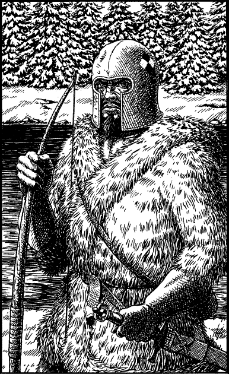

294
You and your scouts are taken to a lookout post on the banks of the river where you meet with Baron Maquin, the leader of this mercenary band. He is a tall man, clad from neck to toe in furs that are caked with frost. A battered silver helm hides much of his battle-scarred face, but you can see enough of his distinctly Ilionian features to know at once that he is a brave man, a man of honour. He regards you with a sceptical eye, having never before met a Sommlending lord, let alone one such as you. He questions you at length, and upon hearing your story, you sense that he is greatly impressed. In return he tells you briefly of how he and his men have come to find themselves here.

‘This regiment is still loyal to King Sarnac,’ he says, proudly, ‘unlike the cowardly Stornlanders. They have broken their pact and now they fight ’gainst Lencia, alongside the enemy.’ The Baron spits at the ground in a show of contempt for these treacherous regiments. ‘My command has been left here to fight as a rear-guard. Our orders are to ambush any Drakkarim that may try to reach Darke by river. We believe there to be many enemy reinforcements at Konozod and our task is to prevent them from joining with Magnaarn.’
You remind the Baron that you have just come from Konozod and that it is virtually empty. There are no enemy reinforcements there. Respectfully you suggest that he and his men join with you in an attempt to reach Darke, where he could join once more with the Lencian army. He considers your suggestion, and after discussing it with his men, finally he agrees.
‘But first,’ he says, as he shakes your hand in friendship, ‘you must summon your men to my humble camp. It will soon be dark and it is much too dangerous to travel this river at night. You could be ambushed!’